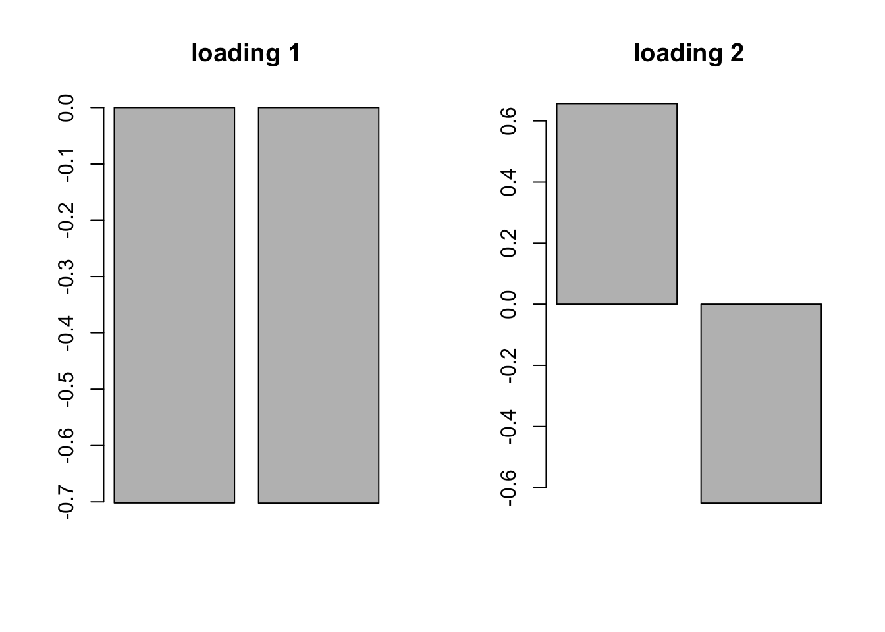

Flash
Yuxin Zou
2017-12-08
Last updated: 2018-01-07
Code version: 698481c
Case 1: 2 dim
- Generate data
library(MASS)
library(flashr2)
Means <- rep(0,2)
set.seed(1)
x1 <- mvrnorm(n = 1000, Means, diag(c(1,0)))
x2 <- mvrnorm(n = 1000, Means, diag(c(0,1)))
Sigma = cbind(c(1,1), c(1,1))
x3 = mvrnorm(n = 1000, Means, Sigma)
x = rbind(x1,x2, x3)
# plus error
x = x + matrix(rnorm(6000, 0, 0.05), nrow=3000, ncol=2)
plot(x)- Flash
data = flash_set_data(x)
fg = flash_add_greedy(data,10, var_type = 'constant')fitting factor/loading 1fitting factor/loading 2fitting factor/loading 3fb = flash_backfit(data,fg)
flash_get_F(data,fb)[1] -6172.173The warnings are muted here.
par(mfrow=c(1,2))
barplot(flash_get_f(fb,1), main='loading 1')
barplot(flash_get_f(fb,2), main='loading 2')
par(mfrow=c(1,1))If we initialize the flash with 3 fixed factors
lfixf = flash_add_fixed_f(data,FF=cbind(c(1,1),c(1,0),c(0,1)))The loadings found here are all 0.
Fit the flash model to data
fixfb = flash_backfit(data,lfixf)Warning in flash_backfit(data, lfixf): fit got worse this iteration by
5.6260053561582flash_get_F(data,fixfb)[1] -6933.503The value of objective function becomes worse.
Case 2: 5 conditions
- Generate data
There are 5 conditions with 8 factors: 10000, 01000, 00100, 00010, 00001 and also 11111 and 11000 and 00111.
sim = function(nsamp=100, err_sd=1){
ncond=5
B.0 = matrix(0, nrow = nsamp, ncol = ncond)
B.1 = B.0; B.2 = B.0; B.3 = B.0; B.4 = B.0; B.5 = B.0
b = rnorm(nsamp)
B.1[,1] = b;
b = rnorm(nsamp)
B.2[,2] = b;
b = rnorm(nsamp)
B.3[,3] = b;
b = rnorm(nsamp)
B.4[,4] = b;
b = rnorm(nsamp)
B.5[,5] = b;
b = rnorm(nsamp)
B.all = matrix(rep(b, 5), nrow = nsamp, ncol = ncond)
b1 = rnorm(nsamp)
B.11 = matrix(cbind(b1, b1, 0, 0, 0), nrow = nsamp, ncol = ncond)
b2 = rnorm(nsamp)
B.111 = matrix(cbind(0, 0, b2, b2, b2), nrow = nsamp, ncol = ncond)
B = rbind(B.1, B.2, B.3, B.4, B.5, B.all, B.11, B.111)
Shat = matrix(err_sd, nrow = nrow(B), ncol = ncol(B))
E = matrix(rnorm(length(Shat), mean = 0, sd = Shat), nrow = nrow(B),
ncol = ncol(B))
Bhat = B + E
row_ids = paste0("effect_", 1:nrow(B))
col_ids = paste0("condition_", 1:ncol(B))
rownames(B) = row_ids
colnames(B) = col_ids
rownames(Bhat) = row_ids
colnames(Bhat) = col_ids
rownames(Shat) = row_ids
colnames(Shat) = col_ids
return(list(B = B, Bhat = Bhat, Shat = Shat))
}set.seed(1)
x = sim(nsamp=5000, err_sd = 0.05)Flash
Only 5 factors with ‘by_column’ type variance.
data = flash_set_data(x$Bhat)
fg = flash_add_greedy(data, Kmax=10, var_type='constant')fitting factor/loading 1fitting factor/loading 2fitting factor/loading 3fitting factor/loading 4fitting factor/loading 5fitting factor/loading 6fitting factor/loading 7fb = flash_backfit(data,fg)
flash_get_F(data,fb)[1] 50151.63layout(matrix(c(1,2,3,4,5,6), 3, 2, byrow = TRUE))
barplot(flash_get_f(fb, 1), main='loading 1')
barplot(flash_get_f(fb, 2), main='loading 2')
barplot(flash_get_f(fb, 3), main='loading 3')
barplot(flash_get_f(fb, 4), main='loading 4')
barplot(flash_get_f(fb, 5), main='loading 5')
barplot(flash_get_f(fb, 6), main='loading 6')
If we initialize the flash with 8 fixed factors
lfixf = flash_add_fixed_f(data,FF=cbind(c(1,1,0,0,0),c(0,0,1,1,1),c(1,1,1,1,1),
c(1,0,0,0,0),c(0,1,0,0,0),c(0,0,1,0,0),
c(0,0,0,1,0),c(0,0,0,0,1)))
fixfb = flash_backfit(data,lfixf)Warning in flash_backfit(data, lfixf): fit got worse this iteration by
57.5252646545414flash_get_F(data,fixfb)[1] 71139.54The value of objective function becomes higher.
The algorithm converges to a local optimum.
Session information
sessionInfo()R version 3.4.3 (2017-11-30)
Platform: x86_64-apple-darwin15.6.0 (64-bit)
Running under: macOS High Sierra 10.13.2
Matrix products: default
BLAS: /Library/Frameworks/R.framework/Versions/3.4/Resources/lib/libRblas.0.dylib
LAPACK: /Library/Frameworks/R.framework/Versions/3.4/Resources/lib/libRlapack.dylib
locale:
[1] en_US.UTF-8/en_US.UTF-8/en_US.UTF-8/C/en_US.UTF-8/en_US.UTF-8
attached base packages:
[1] stats graphics grDevices utils datasets methods base
other attached packages:
[1] flashr2_0.4-0 MASS_7.3-47
loaded via a namespace (and not attached):
[1] Rcpp_0.12.14 knitr_1.17 magrittr_1.5
[4] REBayes_1.2 pscl_1.5.2 doParallel_1.0.11
[7] SQUAREM_2017.10-1 lattice_0.20-35 foreach_1.4.4
[10] ashr_2.1-27 stringr_1.2.0 tools_3.4.3
[13] parallel_3.4.3 grid_3.4.3 git2r_0.20.0
[16] htmltools_0.3.6 iterators_1.0.9 yaml_2.1.16
[19] rprojroot_1.2 digest_0.6.13 assertthat_0.2.0
[22] softImpute_1.4 Matrix_1.2-12 codetools_0.2-15
[25] evaluate_0.10.1 rmarkdown_1.8 stringi_1.1.6
[28] compiler_3.4.3 Rmosek_8.0.69 backports_1.1.2
[31] truncnorm_1.0-7 This R Markdown site was created with workflowr